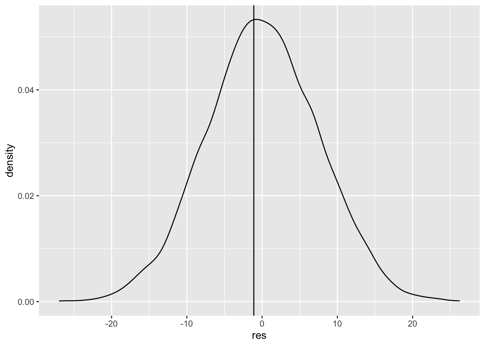

tone_of_voice <- ''
mode_of_speech <- ''
superlative <- ''
score_on_test <- 'percent' # should end with percent
name_of_classmate <- ''
emotion <- ''
eating_verb <- '' #slurp
vessel <- ''
thing_found_in_compost <- ''6 Hypothesis Testing

Frequentist Hypothesis testing is a very well established framework in the applied practice, and scientific literature. Sometimes (often, currently) referred to as Null Hypothesis Significance Testing (NHST), this framework essentially makes an absurd assertion and asks the data to overturn that assertion.
Like a petulant child, NHST essentially proclaims,
“If you really loved me, you would let me watch this screen one-hundred hours every day.”
Here the absurdity is that a parent might not love their child, and the criteria to overturn that assertion is noted to be “buy me an iPad”’.
What is Frequentist testing doing?
This testing framework works on samples of data, and applies estimators to produce estimates of population parameters that are fundamentally unknown and unknowable. Despite this unknown and unknowable population target, with some carefully written down estimators we can rely on the convergence characteristics of some estimators to produce useful, reliable results.
We begin with the one-sample t-test. The one-sample t-test relies on the sample average as an estimator of a population expectation. In doing so, it relies on the effectiveness of the Weak Law of Large Numbers and the Central Limit Theorem to guarantee that the estimator that converges in probability to the population expectation, while also converging in distribution to a Gaussian distribution.
These two convergence concepts permit a data scientist to make several inferences based on data:
- The probability of generating data that “looks like what is observed”, if the null-hypothesis were true. This is often referred to as the p-value of a test, and is the petulant statement identified above.
- An interval of values that, with some stated probability (e.g. 95%), contains the true population parameter.
This framework begins a exceedingly important task that we must understand, and undertake when we are working as data scientists: Producing our best-estimate, communicating how we arrived at that estimate, what (if any) guarantees that estimate provides, and crucially all limitations of our estimate.
6.1 Learning Objectives
- Understand the connection between random variables, sampling, and statistical tests.
- Apply the Frequentist testing framework in a simple test – the one-sample t-test.
- Anticipate that every additional Frequentist test is a closely related variant of this test.
6.2 Class Announcements
- You will be taking your second test this week. The test follows the same format as the first test, which we will discuss in live session. The test will cover:
Unit 4: Conditional Expectation and the Best Linear Predictor; and,
Unit 5: Learning from Random Samples.
- Like the first test, our goal is to communicate to you what concepts we think are important, and then to test those concepts directly, and fairly. The purpose of the test is to give you an incentive to review what you have learned through probability theory, and then to demonstrate that you can produce work based on that knowledge.
- There is another practice test on Gradescope, and in the GitHub repository.
- In rosier news, we’re moving out of the only pencil and paper section of this course, and bringing what we have learned out into the dirty world of data. This means a few things:
- If you haven’t yet worked through the R Bridge Course that is available to you, working on this bridge course will be useful for you (after you complete your test). The goal of the course is to get you up and running with reasonably successful code and workflows for the data-based portion of the course.
- We will assign teams, and begin our work on Lab 1 in Live Session next week. This is a two-week, group lab that you will work on with three total team-mates. The lab will cover some of the fundamentals of hypothesis tests,
6.3 Roadmap
Looking Backwards
- Statisticians create a model to represent the world
- We saw examples of estimators, which approximate model parameters we’re interested in.
- By itself, an estimate isn’t much good; we need to capture the uncertainty in the estimate.
- We’ve seen two ways to express uncertainty in an estimator: standard errors and confidence intervals.
Today
- We introduce hypothesis testing
- A hypothesis test also captures uncertainty, but in relation to a specific hypothesis.
Looking Ahead
- We’ll build on the one-sample t-test, to introduce several other statistical tests.
- We’ll see how to choose a test from different alternatives, with an eye on meeting the required assumptions, and maximizing power.
6.4 What does a hypothesis test do?
- What are the two possible outcomes of a hypothesis test?
- What are the four-possible combinations of (a) hypothesis test result; and (b) state of the world?
- Does a hypothesis test always have to report a result that is consistent with the state of the world? What does it mean if it does, and what does it mean if it does not.
- What if you made up your own testing framework, called the {Your Last Name’s} Groundhog test. Which is literally a groundhog looking to see its shadow. Because you made the test, suppose that you know that it is totally random whether a groundhog sees its shadow. How useful would this test be at separating states of the world?
- What guarantee do you get if you follow the decision rules properly?
- Why do we standardize the mean to create a test statistic?
\[ t = \frac{ \overline{X}_n - \mu}{\sqrt{\frac{s^2}{n}}} \]
6.5 Madlib prompt
6.6 Madlib completed
Suppose that a classmate comes to you, and, in a voice , “Hey, I’ve got something that is for statistics test preperation. All you’ve got to do to get percent on Test 2 and make is to this of .
You’re skeptical, but also curious because that last test was tough. Good.
6.7 “Accepting the Null”
(For the purposes of this class, and while you’re talking about testing after the class: the preferred language is to either (a) Reject the null hypothesis, or (b) Fail to reject the null hypothesis.
Acknowledging that we’re only 40% of the way through the course, you decide to hire a hungry, underpaid PhD student the School to conduct the experiment to evaluate this claim. They report back, no details about the test, but they do tell you, “We’re sure there’s no effect of .”
- Do you believe them?
- What, if any, reasons can you imagine not to believe this conclusion?
6.8 Manually Computing a t-Test
In a warehouse full of power packs labeled as 12 volts we randomly measure the voltage of 7. Here is the data:
voltage <- c(11.77, 11.90, 11.64, 11.84, 12.13, 11.99, 11.77)
voltage[1] 11.77 11.90 11.64 11.84 12.13 11.99 11.77- Find the mean and the standard deviation.
sample_mean <- mean(voltage)
sample_sd <- sd(voltage)
n <- length(voltage)
test_statistic <- (sample_mean - 12) / (sample_sd / sqrt(n))
test_statistic[1] -2.247806- Using
qt(), compute the t critical value for a hypothesis test for this sample.
qt(0.025, df=n-1)[1] -2.446912- Define a test statistic, \(t\), for testing whether the population mean is 12.
test_statistic[1] -2.247806- Calculate the p-value using the t statistic.
pt(test_statistic, df=n-1)[1] 0.03281943- Should you reject the null? Argue this in two different ways. (Following convention, set \(\alpha = .05\).)
test_stat_function <- function(data, null_hypothesis) {
sample_mean <- mean(data)
sample_sd <- sd(data)
n <- length(data)
test_statistic <- (sample_mean - null_hypothesis) / (sample_sd / sqrt(n))
return(test_statistic)
}test_stat_function(data=voltage, null_hypothesis=12) |>
pt(df=length(voltage)-1) * 2[1] 0.06563885t.test(
x = voltage,
alternative = 'two.sided',
mu = 12)
One Sample t-test
data: voltage
t = -2.2478, df = 6, p-value = 0.06564
alternative hypothesis: true mean is not equal to 12
95 percent confidence interval:
11.71357 12.01215
sample estimates:
mean of x
11.86286 - Suppose you were to use a normal distribution instead of a t-distribution to test your hypothesis. What would your p-value be for the z-test?
Without actually computing it, say whether a 95% confidence interval for the mean would include 12 volts.
Compute a 95% confidence interval for the mean.
6.9 Falling Ill (The General Form of a Hypothesis Test)
In the async content for the week, we’re really, really clear that we’re only working with the t-distribution. But, the general “form” of a frequentist hypothesis test is always the same: produce a test statistic; produce a distribution of that test statistic if the null hypothesis were true; then compare the two. Let’s stretch this application a little bit.
There is a theory that upcoming tests cause students to fall ill. We have been collecting wellness data from our students for several years (not really…) and we have found the following distribution of illnesses (Notice that this does not tell you anything about how many students we have enrolled over the years):
20 students have reported being ill in the week before Test 2
10 students have reported being ill in the week after Test 2
Think of wellness/illness as a dichotomous statement.
- State an appropriate null hypothesis. After you have stated this null hypothesis, can you think about (or, even better) can you produce a distribution of the probability of {0, 1, 2, 3, … 30} of the illnesses reported before the test?
null_distribution <- dbinom(0:30, 30, prob = 0.5)
ggplot() +
aes(x=0:30, y=null_distribution) +
geom_col()State a rejection criteria. What occurrence in the data would cause you do doubt the plausibility of your null hypothesis?
What do you conclude? Given the data that is presented to you and the null hypothesis, what do you conclude?
6.10 Data Exercise
t-Test Micro Cheat Sheet
In order for a t-test to produce valid results, a set of conditions must be satisfied. While the literature refers to these as assumptions, you might do better to refer to these for yourselves as requirements. Meaning, if these requirements for the data generating process are not satisfied, the test does not produce results that hold any statistical guarantees.
- Metric variable: The data needs to be numeric
- IID: The data needs to be sampled using an independent, identically distributed sampling process.
- Well-behaved: The data need to demonstate no major deviations from normality, considering sample size
Testing the Home Team Advantage
The file ./data/home_team.csv contains data on college football games. The data is provided by Wooldridge and was collected by Paul Anderson, an MSU economics major, for a term project. Football records and scores are from 1993 football season.
home_team <- read.csv('./data/home_team.csv') |>
select(dscore, dinstt, doutstt) |>
rename(
score_diff = dscore,
in_state_tuition_diff = dinstt,
out_state_tuition_diff = doutstt
)
glimpse(home_team, width = 80)Rows: 30
Columns: 3
$ score_diff <int> 10, -14, 23, 8, -12, 7, -21, -5, -3, -32, 9, 1,…
$ in_state_tuition_diff <int> -409, NA, -654, -222, -10, 494, 2, 96, 223, -20…
$ out_state_tuition_diff <int> -4679, -66, -637, 456, 208, 17, 2, -333, 2526, …We are especially interested in the variable, score_diff, which represents the score differential, home team score - visiting team score. We would like to test whether a home team really has an advantage over the visiting team.
- The instructor will assign you to one of two teams. Team 1 will argue that the t-test is appropriate to this scenario. Team 2 will argue that the t-test is invalid. Take a few minutes to examine the data, then formulate your best argument.
- Should you perform a one-tailed test or a two-tailed test? What is the strongest argument for your answer?
## I'm going two-tailed.
## H0 : No effect of being home or away
## HA : There IS some effect. - Execute the t-test and interpret every component of the output.
t.test(x=home_team$score_diff, mu=0, alternative = 'two.sided')
One Sample t-test
data: home_team$score_diff
t = -0.30781, df = 29, p-value = 0.7604
alternative hypothesis: true mean is not equal to 0
95 percent confidence interval:
-8.408919 6.208919
sample estimates:
mean of x
-1.1 res <- NA
for(i in 1:10000) {
res[i] <- mean(rnorm(n=7, sd=sd(home_team$score_diff)))
}
ggplot() +
aes(x=res) +
geom_density() +
geom_vline(xintercept=mean(home_team$score_diff))
home_team |>
ggplot() +
aes(x=abs(score_diff)) +
geom_density()mean(home_team$score_diff)[1] -1.1mean((res < mean(home_team$score_diff))) + mean(res > abs(mean(home_team$score_diff)))[1] 0.8823- Based on your output, suggest a different hypothesis that would have led to a different test result. Try executing the test to confirm that you are correct.
6.11 Assumptions Behind the t-test
For the following scenarios, what is the strongest argument against the validity of a t-test?
You have a sample of 50 CEO salaries, and you want to know whether the mean salary is greater than $1 million.
A nonprofit organization measures the percentage of students that pass an 8th grade reading test in 40 neighboring California counties. You are interested in whether the percentage of students that pass in California is over 80%
You have survey data in which respondents assess their own opinion of corgis, with options ranging from “1 - extreme disgust” to “5 - affection so intense it threatens my career.” You want to know whether people on the average like corgis more than 3, representing neutrality.